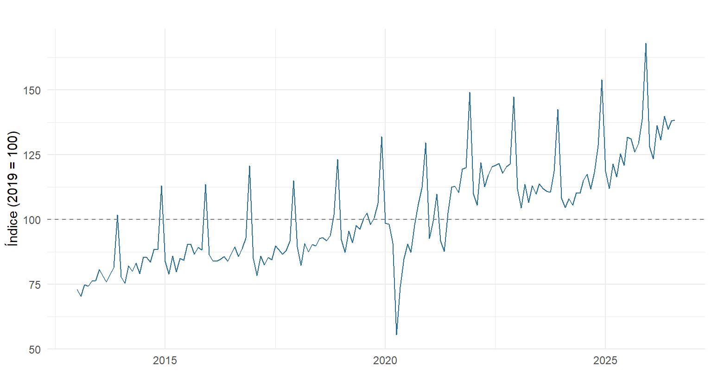

Capítulo 2 Los datos
2.1 Origen y variable de trabajo
La información proviene del anexo Índices empalmados de la EMC con corte a agosto de 2026 (cifras provisionales, actualizado por el DANE el 16 de octubre de 2026 y descargado el 25 de octubre de 2026). El anexo tiene once hojas. Se usa la hoja 1.2, Índices empalmados de las ventas en valores reales por líneas de mercancía – Total nacional, con base 2019 = 100.
De esa hoja se toma la columna «Total comercio minorista sin otros vehículos», porque el DANE indica en sus notas que es el total comparable históricamente: los índices de ventas en valores reales descuentan el efecto de los precios, y la serie se empalmó por retropolación conservando las variaciones anuales. Los demás totales y las 16 líneas de mercancía quedan disponibles para análisis complementarios.
El script R/preparar_datos.R del repositorio descarga el anexo, extrae la columna y guarda la serie en datos/ventas_reales_minorista.csv:
ventas <- read.csv("datos/ventas_reales_minorista.csv")
y <- ts(ventas$indice_ventas_reales, start = c(2013, 1), frequency = 12)La serie tiene 164 observaciones mensuales entre enero de 2013 y agosto de 2026. Su valor mínimo es 55,5, en abril de 2020, y el máximo es 168,0, en diciembre de 2025. En agosto de 2026 el índice fue 138,4, 5,6 % más que en agosto de 2025.
autoplot(y, colour = azul) +
geom_hline(yintercept = 100, linetype = "dashed", colour = "grey50") +
labs(x = NULL, y = "Índice (2019 = 100)")
Figura 2.1: Índice de ventas reales del comercio minorista sin otros vehículos (base 2019 = 100), enero de 2013 a agosto de 2026.
La Figura 2.1 muestra tres rasgos que guían el resto del análisis:
- Tendencia creciente de largo plazo: el promedio anual del índice pasa de 78,5 en 2013 a 133,7 en los primeros ocho meses de 2026.
- Picos regulares cada diciembre, señal de una estacionalidad anual marcada.
- Rupturas no estacionales: la caída de abril de 2020 por el aislamiento obligatorio frente al COVID-19 y una desaceleración en 2023.
| Año | Índice promedio | Variación anual (%) |
|---|---|---|
| 2013 | 78,5 | |
| 2014 | 85,2 | 8,5 |
| 2015 | 88,0 | 3,3 |
| 2016 | 89,4 | 1,6 |
| 2017 | 88,5 | -1,1 |
| 2018 | 93,9 | 6,2 |
| 2019 | 100,0 | 6,5 |
| 2020 | 93,8 | -6,2 |
| 2021 | 109,0 | 16,2 |
| 2022 | 119,7 | 9,8 |
| 2023 | 113,9 | -4,8 |
| 2024 | 116,0 | 1,8 |
| 2025 | 128,3 | 10,6 |
La Tabla 2.1 resume la trayectoria de largo plazo: crecimiento sostenido hasta 2019, caída en 2020, fuerte rebote en 2021 y 2022, contracción en 2023 y recuperación desde 2024.